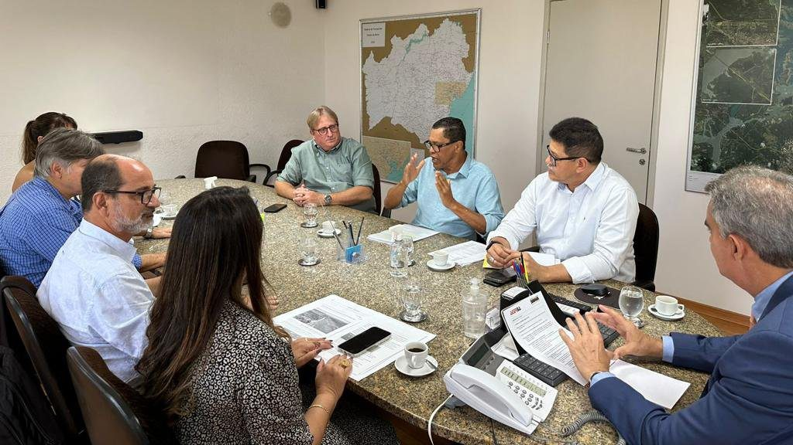

Deputada Cláudia Oliveira media solução para limitação de voos em Porto Seguro
Portaria da Anac gerou preocupações sobre potenciais prejuízos aos passageiros e à equipe da aviação civil no aeroporto do município

Em resposta à recente Portaria n° 12.228/2023 da Agência Nacional de Aviação Civil (Anac), que limita as operações no Aeroporto Internacional de Porto Seguro, a deputada estadual Cláudia Oliveira (PSD) iniciou esforços para solucionar o problema. A medida gerou preocupações sobre potenciais prejuízos aos passageiros e à equipe da aviação civil no terminal.
Representando a região da Costa do Descobrimento, a deputada organizou uma reunião com diversas autoridades para abordar a situação.
Estiveram presentes o secretário de Infraestrutura da Bahia, Sérgio Brito; Henrique Pedreira e Felipe Santos, executivos do Grupo Sinart, responsável pela administração do aeroporto; Ubaldo Brito, diretor de terminais da Secretaria de Infraestrutura da Bahia (Seinfra); Carlos Hulsmann, coordenador de terminais da Agência Estadual de Regulação de Serviços Públicos de Energia, Transportes e Comunicações da Bahia (AGERBA); e Eurico Isaque, diretor de qualidades da AGERBA.
Segundo a deputada, o governador Jerônimo Rodrigues e o secretário Sérgio Brito estão comprometidos em resolver essa questão o mais rápido possível, devido à “importância crítica” do Aeroporto Internacional de Porto Seguro, um dos destinos mais visitados do Brasil.